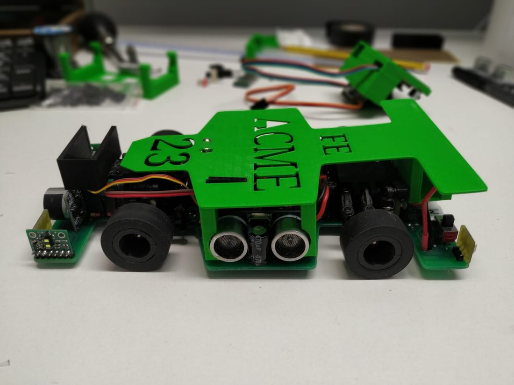
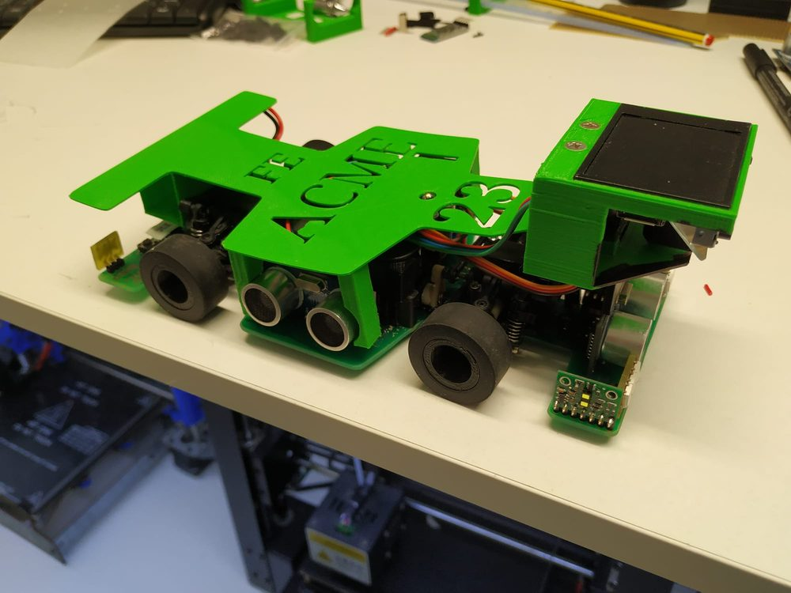
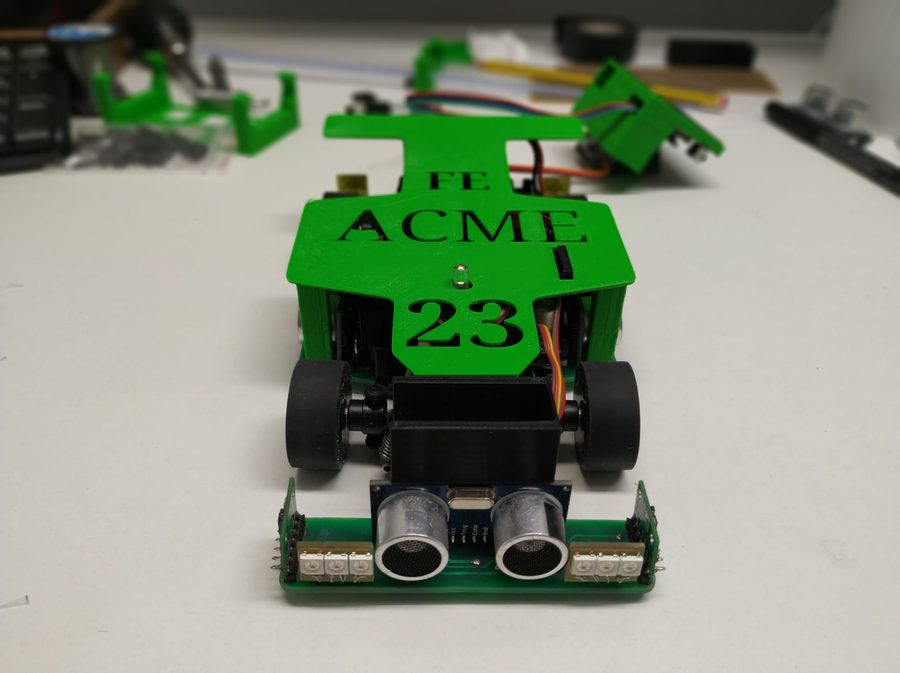
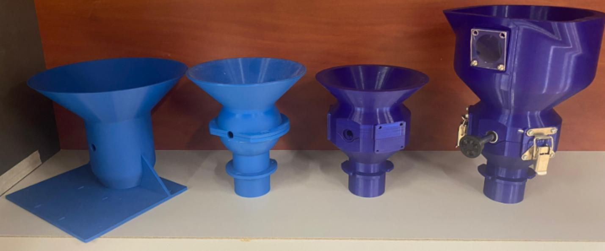
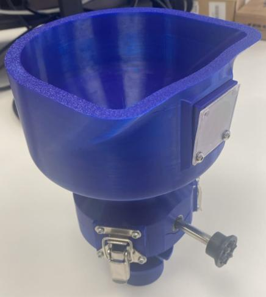
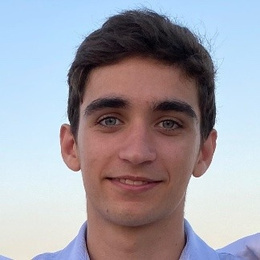

Mecánica
Dibujar la pieza, imprimirla, romperla, volver a dibujarla.
CAD, prototipado e impresión 3D. Los mecanismos se afinan viendo cómo se comportan de verdad.
Soy Álvaro, ingeniero mecatrónico. De Ibiza, ahora en Barcelona. Me gusta que lo que programo se mueva de verdad: diseño, construyo y pongo a prueba sistemas que juntan mecánica, electrónica y software.
Esta página es una nave industrial. Baja por ella.
Elegí Mecatrónica en la Universitat de Vic porque no quería escoger entre mecánica, electrónica y programación. Me fue bien: terminé con una media de 8,56, once matrículas de honor y un trabajo final de 9,5. Pero lo que de verdad me formó está en el resto de este pasillo.
8,56 de media11 matrículas de honorTFG 9,5
Con doce años entré en el Club de Robótica Educativa de Ibiza. Allí descubrí que montar, cablear y programar no son tres cosas distintas: son la misma, hacer que un robot funcione. Me quedé ocho años.
En 2018 fuimos a la final internacional de la World Robot Olympiad, en Tailandia, con un robot LEGO que gestionaba un cultivo él solo. Quedamos 23.º del mundo en Regular Junior. Descubrimos que había veintidós equipos mejores que nosotros, y que eso era una buena noticia: había mucho por aprender.
23.º del mundo · WRO Thailand 2018
Con el equipo ACME diseñamos un coche que conduce solo, de la carrocería impresa en 3D al código. En 2021 quedamos sextos del mundo en Future Engineers. No fue mi robot: fue el nuestro. Es el proyecto del que más orgulloso estoy, por lo que hicimos y por con quién.
6.º del mundo · WRO Future Engineers

En 2022 empecé la carrera. En 2023 volvimos a la final internacional, esta vez en Panamá, con una nueva versión del ACME. Tres microcontroladores repartiéndose el trabajo por I²C, dos ultrasonidos, una cámara y un PID afinado a base de pruebas. Todo el código y el cuaderno de ingeniería están en abierto.


Mi trabajo final, hecho como Junior Engineer en Awayter, es un dispensador de producto a granel: una válvula rotativa de cuatro palas flexibles y una tolva que se quita con dos cierres para limpiarla. Lo diseñé, lo imprimí y lo probé con distintos alimentos, varias veces.
El sensor óptico de nivel se confundía con los reflejos. Incliné la ventana 7,5 grados y puse una trampa de luz enfrente. Dejó de confundirse.


Dibujar la pieza, imprimirla, romperla, volver a dibujarla.
CAD, prototipado e impresión 3D. Los mecanismos se afinan viendo cómo se comportan de verdad.
Medir antes de actuar.
Sensores, actuadores, microcontroladores y lazos de control en robots que tienen que decidir solos.
Código que mueve cosas.
C++ y Python en el día a día, MATLAB y ROS en la formación. Me interesan la autonomía y los sistemas embebidos.

Acabo de terminar la carrera y busco un equipo con el que seguir aprendiendo: robótica, sistemas embebidos, integración o control. Si hacéis cosas que se mueven, me interesa.
alvaroibz2004@gmail.comBarcelona, España · +34 639 880 405
Mi GitHub